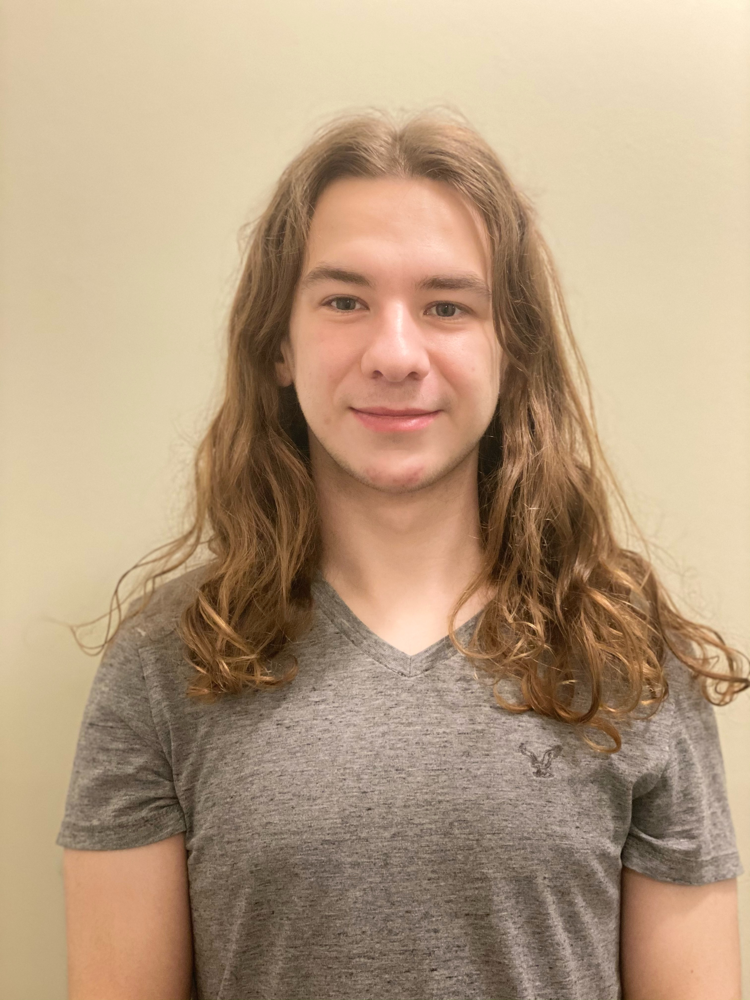

Investing in the Next Generation
Our scholarships are designed for student activists who embody the principles of Activism Literacy. We support individuals who are not only passionate about change but are also committed to developing the critical skills needed for effective, sustainable, and impactful social action. By easing the financial burden of higher education, we empower these emerging leaders to deepen their knowledge while continuing to organize for systemic change in their communities.

Featured Scholar: Aster Counihan
LGBTQ+ Activist & Teach for America Corps Member
We are proud to support Aster Counihan, whose tireless advocacy for LGBTQ+ rights and dedication to educational equity embodies the spirit of informed, compassionate activism. As a Teach for America corps member, Aster brings critical perspectives and inclusive practices into the classroom, creating safe spaces for all students while continuing to organize for systemic change.
Our micro-grants are designed to be accessible and impactful, providing the seed funding that grassroots projects need to get off the ground. We look to fund projects with a clear goal, an actionable plan, and a passionate lead.
Case Study: Food Systems Coalition of Greater Gainesville (FSC)
Project: North Central Florida Food System Public Resource Hub
Our foundation awarded a micro-grant to this grassroots networking organization to enhance their mission of improving the accessibility, justice, and sustainability of the local food system. This project directly addresses a critical need for a centralized, public repository of data to help community stakeholders make informed, evidence-based decisions.
Excerpt from Project Proposal:
Through this proposed project, we seek to expand the reach and transparency of the FSC by developing a publicly accessible website where informational resources relevant to the food systems of North Central Florida can be stored and shared amongst our community.
Key Objectives
- Expand accessibility of shared information.
- Increase transparency of coalition proceedings.
- Develop a public library of place-based research.
Our Funding Impact ($880)
- 3-year domain registration and web hosting.
- Advanced website plugins for security.
- Compensation for community website reviewers.
Our training programs are designed to equip activists with the practical, strategic skills needed to run effective campaigns and build resilient movements. By prioritizing activism literacy, we ensure that the energy for change is channeled effectively, transforming passion into sustainable action.
What to Expect: A Hands-On Approach
Our training philosophy is rooted in action and collaboration. Expect dynamic, hands-on sessions where you will work with peers and experienced facilitators to turn theory into practice. We move beyond passive lectures to create an engaging environment where you can develop and refine real-world skills. Our goal is to ensure you leave not just with new knowledge, but with the confidence and tools to apply it directly to your work.
Our Training Formats & Options
We offer several formats designed to meet the diverse needs of the activist community:
-
Intensive Workshops & Seminars: These structured sessions provide a deep dive into the core components of activism literacy. They are ideal for individuals or groups looking to build a comprehensive, strategic framework for their social change efforts.
-
Community & Partner Collaborations: We believe in bringing activist education to where people are. Through unique collaborations, we offer specialized training sessions to a broad and engaged audience. A key example is our work with TEDxUF, where we provided dynamic, hands-on activist training to event attendees between talks.
Our Core Curriculum
All of our training is built on the essential framework of Activism Literacy. Key modules include:
- Strategic Campaign Planning: Learn to move beyond reactive protest by analyzing power structures and designing proactive, long-term campaigns for justice that win tangible victories.
- Community Organizing & Coalition Building: Master the skills to build broad coalitions, foster resilient movements, and mobilize community members for collective impact.
- Sustainable Activism: Develop crucial practices for non-violent communication, digital security, and self-care to prevent burnout and ensure the longevity of your work and your movement.
Our experienced team offers pro-bono consulting to help activists and organizations sharpen their vision and structure projects for long-term impact. We serve as a crucial point of tangency between innovative ideas, grassroots movements, and vital resources.
What to Expect
Expect a collaborative partnership focused on turning your vision into a viable project. Our team provides direct mentorship to help you refine your goals and structure your plans. We act as a strategic partner, guiding you from a nascent idea to a fully developed, fundable proposal ready for its next steps.
Our Consulting Services
We believe in experiential learning and community partnership to help turn passion into sustainable action. Our strategic guidance includes:
- Goal Clarification & Strategic Planning
- Proposal Development & Funding Strategy
- Community Partnership & Networking
The Activist HQ Podcast
Interviews with activists, community leaders, and the inspiring people we have worked with. Hear stories from the front lines and learn about the strategies that create lasting change.
Featured Episodes

The Activist ToolKit
A deep dive into the essential strategies and tools every activist needs for a successful campaign.

Interview with Brooke Goodspeed
The founder of the GET Included Cafe shares her journey in building an inclusive community space.
Share Your Story
Are you an activist or community organizer with a story to tell? We want to hear from you. Reach out to share your story on our podcast.
Share Your Story